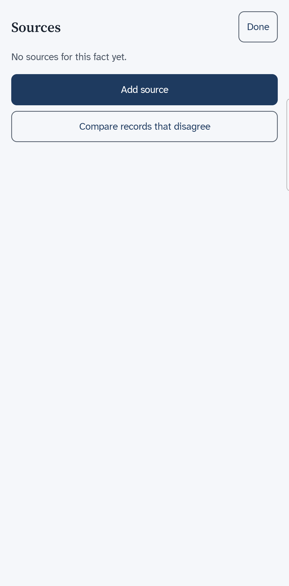
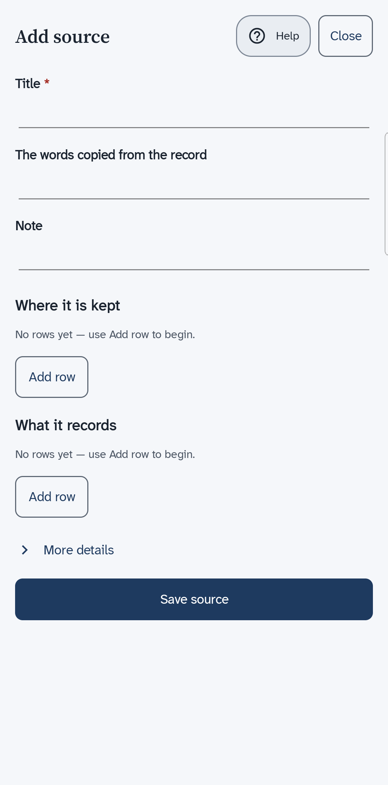
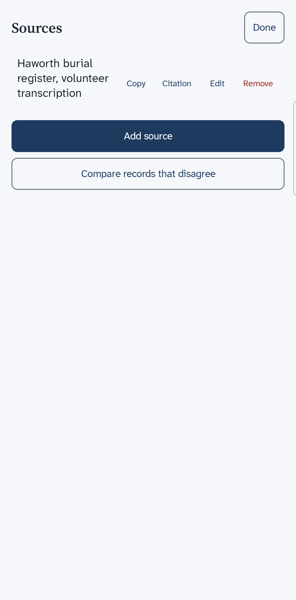
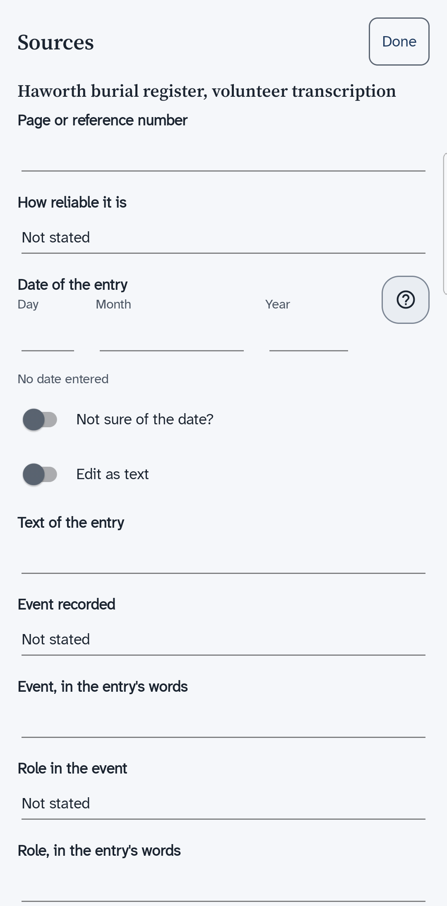
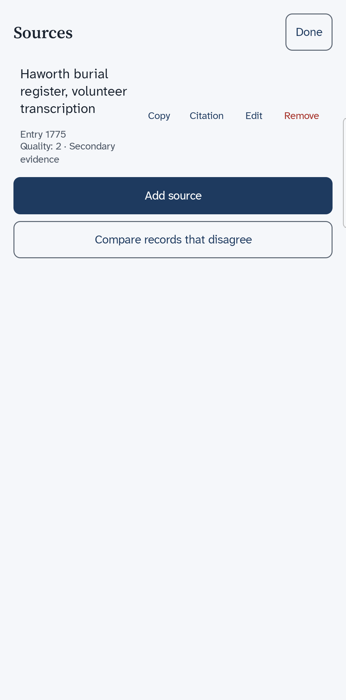

BetaThis is a new service – your feedback will help us to improve it.
Look at the sources of a fact
See which books and records back up a birth, a death or another fact, add a source to it, and say how reliable it is.
About this task
Each fact on a person's page has a small chip that counts its sources. A chip that says Sources: 0 means nothing backs that fact up yet. Every count of sources uses the same words, so you see them on a person's card in the results of a search too.
Procedure
On the page of a person, choose the chip beside the fact, such as Birth or Death.
A sheet named Sources opens. A fact with no source says No sources for this fact yet.

Choose Add source.
A box to search for a source you have already added opens. Use it when one book backs up many facts. The other choice is Add a new source.
Choose Add a new source.
A form opens. Only Title is needed. The other boxes hold the words copied from the record, a note, and where the source is kept. More details adds the author and the publisher.

Type the title, then choose Save source.
The source is already attached to the fact. The sheet shows its title, and the buttons Copy, Citation, Edit and Remove.

Choose Citation, then fill in the page and how reliable the source is.
A citation says where in the source you found the fact. Enter the page, folio or entry in Page or reference number. Choose how good the evidence is in How reliable it is. If the entry has a date, enter it in Date of the entry.

Choose Save, then Done.
The sheet shows the title, the page and a line that starts Quality. The chip on the person's page shows the new count.

Results
The choices for how reliable a source is start with Not stated. They run from unreliable or worked out up to direct and primary evidence. They rate how good the evidence is. They do not say that the fact is true. A copy of a record, such as a transcription, is second-hand evidence.
When a fact has one place, such as a birth place or a death place, Compare records that disagree shows on the sheet. It opens a page that lists what each source says about the place and how good each source is. Use it when two records give different answers.